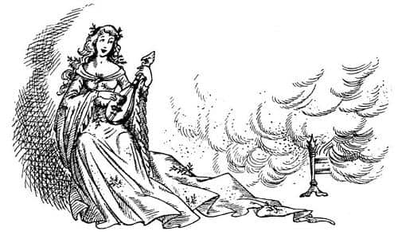

Yeraltı Kraliçesi
İki Toprak İnsan içeriye girdi, ama ilerlemek yerine kapının her iki yanına geçip yerlere kadar eğildiler. Arkalarından herkesin görmeyi beklediği ya da arzuladığı en son kişi geliyordu; yeşil giysili kadın, Yeraltı Kraliçesi. Kapıda hiç kıpırdamadan durdu, olup biteni anlamaya çalışırken döndürdüğü gözlerini görebiliyorlardı; üç yabancı, mahvolmuş gümüş sandalye ve elinde kılıcı, serbest Prens.
Kraliçe bembeyaz oldu; Jill bunun bazı insanların yüzüne korktuklarında değil kızdıklarında gelen türden bir beyazlık olduğunu düşünüyordu. Bir an için Cadı gözlerini Prens’e dikti, gözlerinden ölüm okunuyordu. Sonra fikrini değiştirir gibi oldu.
“Bizi yalnız bırakın” dedi iki Toprak İnsan’a. “Ben çağırana kadar kimse bizi rahatsız etmesin. Ölümüne susayan varsa denesin.” Cüceler yavaşça uzaklaştı ve Cadı-Kraliçe kapıyı kapatıp kilitledi.
“Şimdi Prensim” dedi. “Günlük krizin gelmedi mi yoksa erkenden geçti mi? Neden bağların açık? Bu yabancılar kim? Senin emniyette kalabildiğin tek yer olan sandalyeyi onlar mı mahvetti?”
Cadı onunla konuşurken Prens Rilian ürperdi. On yıl boyunca köle olmanızı sağlayan bir büyüden yarım saatte kurtulmak kolay değildir elbette. Sonra büyük bir çabayla konuşarak dedi ki:
“Madam, bu sandalyeye artık ihtiyaç yok. Etkisinde bulunduğum büyülerden dolayı bana derinden acıdığını yüzlerce kez söyleyen siz, bu büyülerin artık tamamıyla sona erdiğini duymaktan kuşkusuz memnun kalacaksınız. Öyle görünüyor ki, tedavi yönteminizde küçük bir hata oluşmuş. Bunlar benim gerçek dostlarım, beni kurtardılar. Aklım başımda artık ve size söyleyeceğim iki şey var: Birincisi, beni bir Toprak İnsanlar ordusunun başına geçirip yukarı dünyaya çıkarmanız ve bana hiçbir zararı olmayan bir ulusun kralı yapmanız imkânsız, gerçek efendilerini öldürüp tahtlarına kanlı ve yabancı bir despot olarak geçme düşüncesi, artık kendime geldiğim için, kesinlikle midemi bulandırıyor. Bunu, bir ihanet sayılacağı için reddediyorum. İkincisi; ben bazılarının Denizci Caspian dedikleri, bu isimle bilinen X. Caspian’ın tek çocuğu, Narnia Kralı’nın oğlu Rilian’ım. Bundan dolayı Madam, amacım ve görevim, siz Ekselansları’nın sarayından çabucak ayrılıp kendi ülkeme gitmektir. Lütfen bana ve dostlarıma karanlık ülkenizi emniyetle terk etmemizi sağlayacak bir rehber verin.”
Cadı hiçbir şey söylemedi, yüzünü ve gözlerini sabit bir şekilde Prens’in üzerinde tutarak duvar boyunca yürüdü. Şömineden çok uzakta olmayan birtakım küçük kutulara geldiğinde birini açtı ve bir avuç yeşil toz çıkardı. Bunu ateşe fırlattı. Ateş fazla parlamadı, ama çok tatlı ve uyku veren bir koku yaymaya başladı. Bunu takip eden konuşmalar boyunca koku güçlendi, odayı doldurdu ve düşünmeyi zorlaştırdı. İkinci olarak, mandoline epeyce benzeyen bir müzik aleti çıkardı. Parmaklarıyla çalmaya başladı; birkaç dakika sonra müzik kendini unutturdu, düzenli ve monoton bir tıngırtıya dönüşmüştü. Zaman ilerledikçe beyninize ve kanınıza daha fazla işliyor, bu da düşünmenizi zorlaştırıyordu. Bir süre mandolini çaldıktan sonra (artık tatlı koku çok güçlüydü) sakin bir sesle konuşmaya başladı.
“Narnia?” dedi. “Narnia? Lordun çılgın bağırışları arasında bu ismi sık sık duydum. Sevgili Prens, sen çok hastasın. Narnia diye bir ülke yok.”
“Yanılıyorsunuz, Madam” dedi Suratsız. “Tüm hayatımı orada geçirdim.”
“Öyle mi?” dedi Cadı. “Yalvarırım o ülkenin yerini söyleyin.”
“Yukarıda” dedi Suratsız cesurca, yukarıyı işaret ederek.
“Nasıl?” dedi Kraliçe nazik, yumuşak ve melodik bir gülüşle. “Çatının taşları ve sıvaları arasında bir ülke mi var?”
“Hayır” dedi Suratsız zorlukla nefes alarak. “Yukarı dünyada.”
“Nedir, ya da nerededir bu – ne demiştiniz – Yukarı Dünya?”
“Hadi, gülünç olmayın” dedi Scrubb, tatlı koku ve tıngırtının büyüsüne karşı bütün gücüyle direnmeye çalışarak. “Sanki bilmiyormuşsunuz gibi! Yukarıda, gökyüzünü, yıldızları ve güneşi görebildiğiniz yerde. Siz de orada bulundunuz. Sizinle orada karşılaştık.”
“İnsaf edin küçük kardeş” diye güldü Cadı (bundan daha tatlı bir gülüş duyamazdınız). “Böyle bir karşılaşma hatırlamıyorum. Rüyalarımızda dostlarımızla hep garip yerlerde karşılaşırız. Herkes aynı rüyayı görmedikçe, hatırlanmasını bekleyemezsin.”
“Madam” dedi Prens sertçe, “siz Ekselansları’na Narnia Kralı’nın oğlu olduğumu söylemiştim.”
“Olacaksın da sevgili dostum” dedi Cadı, sanki bir çocuğun suyuna gidiyormuş gibi teselli edici bir sesle, “rüyalarındaki birçok düşsel ülkenin kralı olacaksın.”
“Biz oradaydık” dedi Jill kızgınlıkla. Kızgınlığı büyünün her geçen saniye onları etkisi altına almasından kaynaklanıyordu. Hâlâ bir şeyler hissediyordu ve bu da henüz tam anlamıyla büyünün etkisi altına girmediklerini gösteriyordu.
“Sen de Narnia kraliçesi olmalısın, buna kuşkum yok güzel kız” dedi cadı, aynı tatlılık ve yarı alaycı ses tonuyla.
“Hiç de değilim” dedi Jill ayağını yere vurarak. “Biz başka bir dünyadan geldik.”
“Bu diğerinden daha güzel bir oyun” dedi Cadı. “Anlat bize küçük kız, bu diğer dünya nerede? Onunla bizimki arasında hangi gemiler ve arabalar gidip geliyor?”

Kuşkusuz Jill’in aklına birçok şey geldi; Uygulama Okulu, Adela Pennyfather, kendi evi, radyolar, sinemalar, arabalar, uçaklar, yiyecek karneleri ve kuyruklar. Şimdi çok soluk ve uzakta görünüyorlardı. Tıngır mıngır tıngır mıngır diye çınlıyordu cadının müzik aleti. Jill bizim dünyamızdaki şeylerin ismini hatırlayamadı. Bu kez büyülenmekte olduğu aklına gelmedi, çünkü büyü tüm gücüyle onu etkisi altına almıştı. Büyünün etkisi arttıkça, sanki hiç büyülenmemiş gibi hissedersiniz. Jill birdenbire şunları söylediğini fark etti, o an bunu söylemek onu rahatlatıyordu:
“Hayır, o dünya bir rüya olmalı.”
“Evet. O bir rüya” dedi Cadı, müzik aletini çalmayı sürdürerek.
“Evet, hepsi rüya” dedi Jill.
“Öyle bir dünya hiç var olmadı” dedi Cadı.
“Hayır” dedi Jill ve Scrubb, “öyle bir dünya hiç yoktu.”
“Benimkinden başka bir dünya yok” dedi Cadı.
“Seninkinden başka bir dünya yok” diye tekrarladılar hep bir ağızdan.
Suratsız hâlâ direniyordu. “Dünya ile neyi kastettiğinizi bilmiyorum doğrusu” dedi nefessiz kalan biri gibi konuşarak. “Ama o aleti parmaklarınız kanayıncaya kadar çalsanız da bana Narnia’yı ve yukarı dünyayı unutturamazsınız. Orayı bir daha göremezsek şaşmam. Sanırım orayı ortadan kaldırıp bunun gibi bir karanlığa gömdünüz; bunu yapmış olmanız mümkün. Bir zamanlar orada olduğumu biliyorum. Yıldızlarla dolu gökyüzünü gördüm. Güneşin sabah denizden doğuşunu, akşam dağların ardında batışını gördüm. Öğlenleri, onu gökyüzünde gördüğümde, parlaklığından dolayı ona bakamadığımı da hatırlıyorum.”
Suratsız’ın sözlerinin uyandırıcı bir etkisi olmuştu. Diğer üçü derin bir nefes alarak yeni uyanmış insanlar gibi birbirlerine baktı.
“İşte!” diye bağırdı Prens. “Elbette! Aslan bu Dük Kıllıkıpırdak’ı kutsamış. Şu son birkaç dakikadır hepimiz rüya görüyorduk. Nasıl unutabildik? Kuşkusuz hepimiz güneşi gördük.”
“Tanrı şahidim olsun gördük!” dedi Scrubb. “Aferin Suratsız! En zekimiz sensin.”
O anda, Cadı’nın uykulu bir yaz günü, öğleden sonra bahçedeki karaağaçlarda öten bir güvercinin sesi kadar yumuşak sesi duyuldu:
“Bu bahsettiğiniz güneş nasıl bir şey? Bu kelimeyle ne anlatmak istiyorsunuz?” diyordu.
“Çok şey” dedi Scrubb.
“Bana onun nasıl olduğunu anlatabilir misiniz?” diye sordu Cadı; tıngır mıngır tıngır mıngır diye çalıyordu telleri.
“Ekselansları isterse” dedi Prens, soğuk ama nazik bir sesle. “Şu lambayı görüyor musunuz? Yuvarlak, sarı – tüm odaya ışık veriyor; tavandan sarkıyor. Şimdi bizim güneş dediğimiz şey bu lamba gibidir, sadece çok daha büyük ve parlaktır. Tüm dünyaya ışık verir ve gökyüzünde asılı durur.”
“Nereye asılmış, Lordum?” diye sordu Cadı ve hepsi ne cevap vereceklerini düşünürken, tatlı gülüşüyle ekledi, “Görüyor musunuz? Bu güneşin ne olduğunu anlatmaya çalıştığında tam olarak anlatamıyor, sadece lambaya benzediğini söyleyebiliyorsunuz. Sizin güneşiniz rüyadan başka bir şey değil. O rüyada gördüğünüz tamamen lambadan esinlenilmiş bir şey. Lamba gerçek bir şey; güneşse bir çocuk hikâyesi, masal.”
“Evet, şimdi anlıyorum” dedi Jill ağır ve umutsuz bir ses tonuyla. “Öyle olmalı.” Bu söyledikleri ona çok akıllıca görünüyordu.
Cadı yavaşça ve ciddi bir tavırla tekrar etti, “Güneş yoktur.” Hiç kimse bir şey demedi. Daha yumuşak ve derin bir sesle tekrar etti. “Güneş yoktur.” Bir duraklamadan sonra dördü birden, “Haklısın. Güneş yoktur” dedi. Teslim olup bunu söylemek öyle rahatlatıcıydı ki.
“Güneş hiç yoktu” dedi Cadı.
“Hayır. Güneş hiç yoktu” dedi Prens, Suratsız ve çocuklar.
Jill son birkaç dakikadır ne pahasına olursa olsun hatırlaması gereken bir şey olduğunu hissediyordu. Şimdi hatırlamıştı. Ancak bu düşünceyi dile getirmek çok zordu. Sanki dudaklarına kocaman ağırlıklar asılmıştı. Sonunda büyük bir çaba sarf edip son gücünü de toplayarak, “Aslan var” dedi.
“Aslan mı?” dedi Cadı, müzik aletini çalmayı hızlandırarak. “Ne güzel isim! Anlamı nedir?”
“Bizi dünyamızdan çağıran” dedi Scrubb, “ve buraya Prens Rilian’ı bulmaya gönderen büyük Aslan’dır o.”
“Aslan nedir?” diye sordu Cadı.
“Ah, lanet olsun” dedi Scrubb. “Bilmiyor musun? Bunu ona nasıl anlatabiliriz? Hiç kedi gördün mü?”
“Elbette” dedi Kraliçe. “Kedileri severim.”
“Pekâlâ, Aslan kocaman bir kediye benzer, ama sadece biraz, bir de yelesi vardır. Yelesi bir at yelesi gibi değildir, anlarsın işte, daha çok bir hâkim peruğuna benzer. Sarıdır. Korkunç güçlüdür.”
Cadı başını salladı. “Anlıyorum ki” dedi, “sizin aslanınızla, güneşinizle olduğundan daha ileri gidemeyeceğiz. Lambayı gördünüz ve daha büyük ve daha iyi bir lamba hayal edip güneş diye isimlendirdiniz. Kediler gördünüz, şimdi daha büyük ve daha iyi bir kedi istiyorsunuz ve ona Aslan ismini vereceksiniz. Pekâlâ, güzel bir hayal, ama gerçeği söylemek gerekirse, bu türden bir hayal ancak biraz daha genç olsaydınız yakışırdı size. Bakın, gerçek dünyadan, tek dünya olan benim dünyamdan kopya çekmeden hayal kuramıyorsunuz bile. Siz çocuklar bile böyle oyunlar için çok yaşlısınız. Artık yaşını başını almış bir adam olan sana gelince Prensim, ayıp! Böyle oyunlardan utanmıyor musun? Gelin bu çocukça şakalardan vazgeçin. Gerçek dünyada yapabileceğiniz işler var. Narnia, yukarı dünya, gökyüzü, güneş ve Aslan yok. Şimdi hepiniz yatağa. Yarın daha mantıklı bir hayata başlayalım. Önce yatağa, uykuya; derin uykuya, yumuşak yastıklara, aptalca rüyaların olmadığı bir uykuya dalın.”
Prens ve çocuklar başları eğik, yanakları kırmızı, gözleri yarı kapalı ayakta duruyorlardı; tüm güçleri tükenmiş, büyü neredeyse tamamlanmıştı. Ancak Suratsız tüm gücünü toplayarak ateşe doğru yürüdü. Sonra çok cesurca bir şey yaptı. Bunun kendisine, bir insana verdiği kadar acı vermeyeceğini biliyordu, çünkü çıplak ayakları bir ördeğinki gibi sert, perdeli ve soğuktu. Ama yine de ne olursa olsun canının yanacağını biliyordu ve öyle de oldu. Çıplak ayağıyla, büyük bir kısmı küle dönüşene kadar ocaktaki ateşe vurdu. Üç şey oldu.
Birincisi, ağır ve tatlı koku oldukça azaldı. Ateş sönmeye yüz tutmuştu ve hiç de hoş olmayan, yanık Kıllıkıpırdak kokusu alıyorlardı. Herkesin düşünceleri berraklaştı. Prens ve çocuklar tekrar başlarını kaldırıp gözlerini açtılar.
İkincisi, Cadı o ana kadar kullandığı tüm tatlı seslerden tamamıyla farklı, yüksek ve korkunç bir sesle, “Ne yapıyorsun? Bir daha ateşime dokunmaya cüret edersen, damarlarındaki kanı ateşe dönüştürürüm çamurlu pislik” diye bağırdı.
Üçüncüsü, acı Suratsız’ın aklını başına getirmişti, ne düşündüğünü kesinlikle biliyordu. Bazı büyülerden kurtulmak için acının vereceği güzel bir şoktan iyisi yoktur.
“Peki Madam” dedi topallayarak ateşten uzaklaşırken. “Peki. Söyledikleriniz makul, hiç şaşmıyorum. Ben her zaman en kötüsünü bilmek ve ondan en iyi sonucu çıkarmak isteyen bir adamım. Bu yüzden söylediklerinizin hiçbirini reddetmeyeceğim. Öyle olsa da, söylenecek bir şey daha var; varsayalım biz tüm o şeyleri sadece hayal ettik ya da uydurduk – ağaçlar, otlar, güneş, ay, yıldızlar ve Aslan. Say ki, öyle yaptık. Bu durumda söyleyebileceğim tek şey, uydurulmuş şeylerin gerçek şeylerden daha önemli olduğudur. Diyelim ki, senin karanlık çukurdaki krallığın var olan tek dünya. Eh, bana oldukça sefil bir dünya gibi geliyor. Düşünürsen, bu komik bir şey. Eğer haklıysan, bizler oyunlar oynayan bebekleriz. Ancak oyun oynayan dört bebek senin gerçek dünyana taş çıkartacak bir dünya kurabilir. İşte bu yüzden ben oyun dünyasından yana olacağım. Bir Aslan olmasa bile ben Aslan’dan yanayım. Narnia olmasa bile ben Narnialılar gibi yaşayacağım. Bundan dolayı, size yemek için teşekkür ederek, eğer bu iki bay ve bayan da hazırsa, sarayınızı terk ediyor ve yaşamlarımızı Yukarı Dünya’yı arayarak geçirmek üzere karanlıkta yola çıkıyoruz. Yaşamlarımız çok uzun olmaz belki, ama dünya senin dediğin kadar sıkıcı bir yerse sanırım ondan ayrılmak çok önemsiz bir kayıp olacak.”
“Hurraaa! Yaşasın Suratsız!” diye bağırdı Scrubb ve Jill. Prens aniden, “Dikkat! Cadı’ya bakın” dedi.
Baktıklarında hepsinin tüyleri ürperdi.
Müzik aleti elinden düşmüştü. Kolları yanlarına yapışmış gibi görünüyordu. Bacakları birbirine dolanmış, ayakları yok olmuştu. Elbisesinin uzun ve yeşil etekleri kalınlaşıp tek parça haline gelmişti, birbirine dolanmış ayaklarının oluşturduğu yeşil sütunla bütünleşmiş gibi görünüyordu. Kıvrımlı yeşil sütun sanki Cadı’nın hiç eklemi yokmuş ya da sadece eklemlerden oluşuyormuş gibi kıvrılıp, sağa sola sallanıyordu. Başı iyice geriye düşmüştü; burnu gittikçe uzarken, gözleri hariç yüzünün diğer kısımları yok oluyordu. Artık gözleri kirpiksiz ve kaşsız, büyük ve alev alevdi. Bütün bunları yazmak zaman alıyor; ama öylesine çabuk olmuştu ki, ancak bu kadarını görebildiler. Değişim o kadar hızlı gerçekleşmişti ki, karşı koymaya vakit bulamadılar. Jill’in beli kalınlığında zehir yeşili büyük yılan, iğrenç vücudunu iki ya da üç kere Prens’in bacaklarına dolamıştı. Prens’in kılıç tutan kolunu bağlamak için, şimşek hızıyla bir kez daha dolanmaya başladı vücuduna. Prens tam zamanında davrandı. Kollarını kaldırıp serbest kalmalarını sağladı; yılan göğsüne dolanmıştı ve kaburgalarını kibrit çöpü gibi kırmaya hazır durumdaydı.
Prens onu boğmak amacıyla, sol eliyle yaratığın boynunu yakaladı. Yılanın yüzünü (eğer buna yüz diyebilirseniz) kendininkinden yaklaşık on santim uzakta tutuyordu. Çatal dil korkunç bir şekilde içeri dışarı girip çıkıyor, ancak Prens’e ulaşamıyordu. Prens, vurabileceği en güçlü darbeyi vurmak üzere sağ eliyle kılıcını geriye çekti. Bu arada Scrubb ve Suratsız silahlarını çekmiş, yardımına koşmuşlardı. Üç darbe aynı anda indi. Scrubb’ın darbesi (deriyi yaralamamıştı bile, hiç yararı olmamıştı) yılanın vücuduna Prens’in elinin altında bir yere inmişti, ama Prens’in ve Suratsız’ın darbeleri yılanın boynuna isabet etmişti. Bu bile onu öldürmemişti, ama Rilian’ın bacaklarındaki ve göğsündeki düğümler gevşemeye başlamıştı. Birbiri ardına vurdukları darbelerle yılanın kafasını kopardılar. İğrenç şey öldükten çok sonra bile bir hortum gibi kıvranıp hareket etmeye devam etti. Zemin, tahmin edebileceğiniz gibi, korkunç bir pislik içindeydi.
Prens tekrar nefes alabildiğinde, “Baylar, teşekkür ederim” dedi. Sonra üç fatih nefes nefese birbirlerine bakarak tek söz etmeksizin uzun süre durdu. Jill, akıllıca, yere oturmuş sessizce bekliyor ve kendi kendine, “Umarım bayılmam ya da kusmam veya aptalca bir şey yapmam” diyordu.
“Soylu annemin intikamı alındı” dedi Rilian az sonra. Bu kuşkusuz uzun yıllar önce Narnia’da, ormandaki pınarın yanında boşu boşuna takip ettiğim şey. Bunca yıl annemin katilinin kölesi olmuşum. Sonunda iğrenç cadı yılana dönüştüğü için çok memnunum, beyler. Bir kadını öldürmüş olmak ne namıma ne de şerefime yakışırdı. Şuna bir bakın.” Jill’i kastediyordu.
“Ben iyiyim, teşekkürler” dedi Jill.
“Küçük hanım” dedi Prens, Jill’in önünde eğilerek. “Çok cesursunuz, kendi dünyanızda soylu bir kandan geldiğinize hiç kuşkum yok. Gelin dostlarım. Şurada biraz şarap kalmış. Biraz kendimize gelelim ve zaferin şerefine içelim. Sonra planımızı yaparız.”
“Harika bir fikir, efendim, bir nefes alalım” dedi Scrubb.